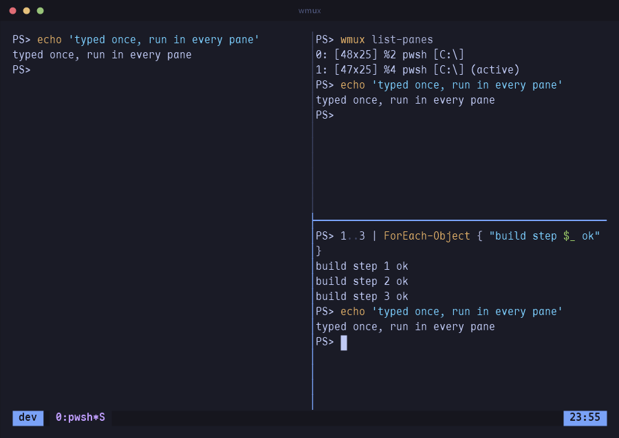
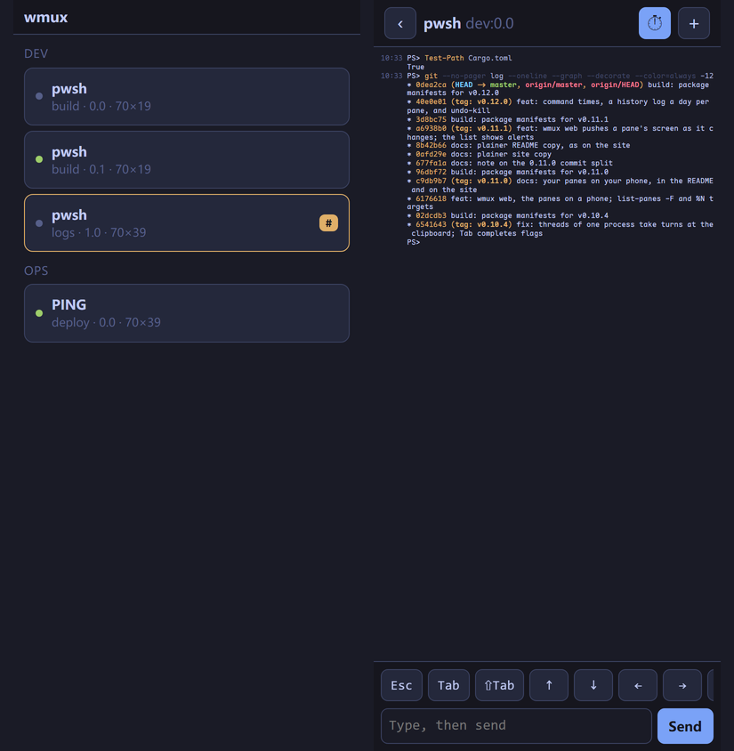
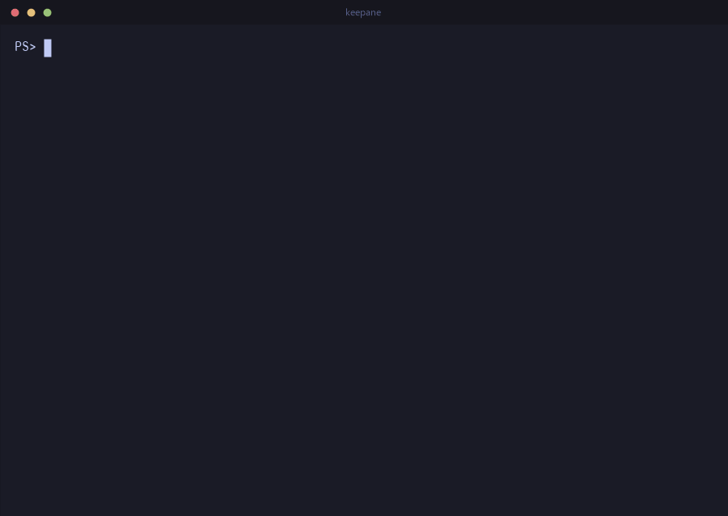
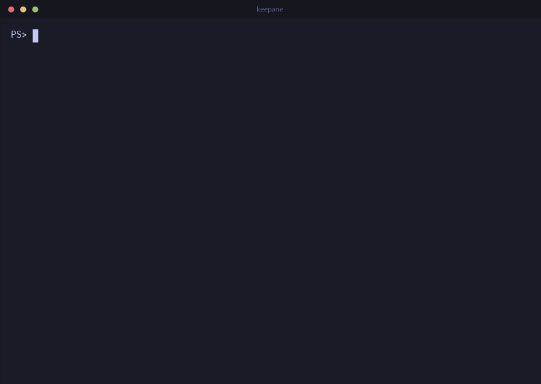
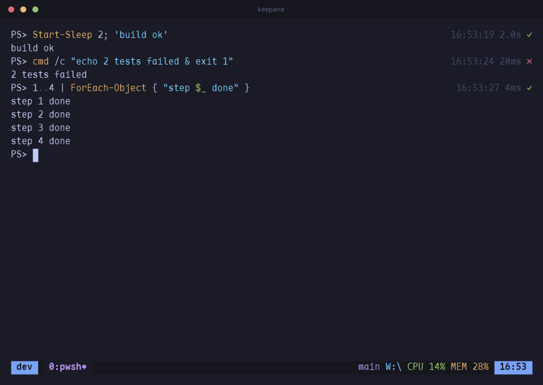
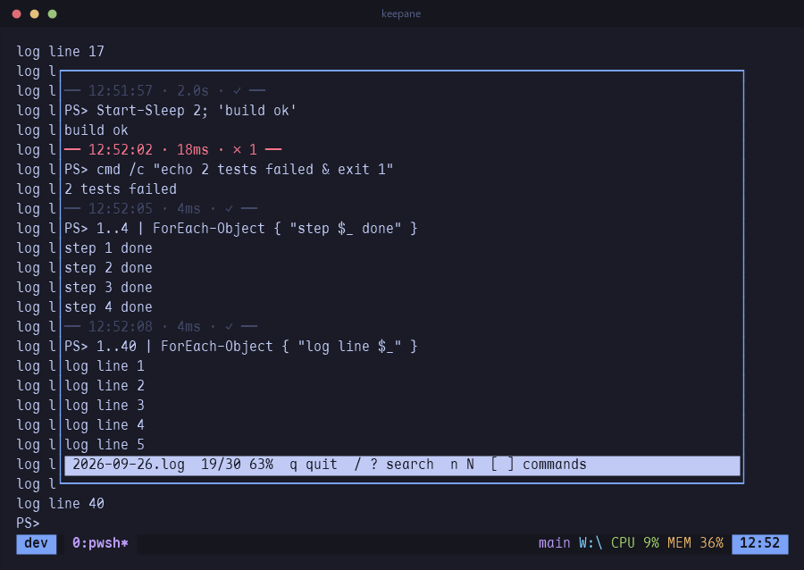
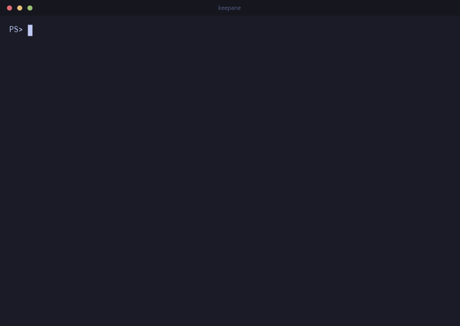
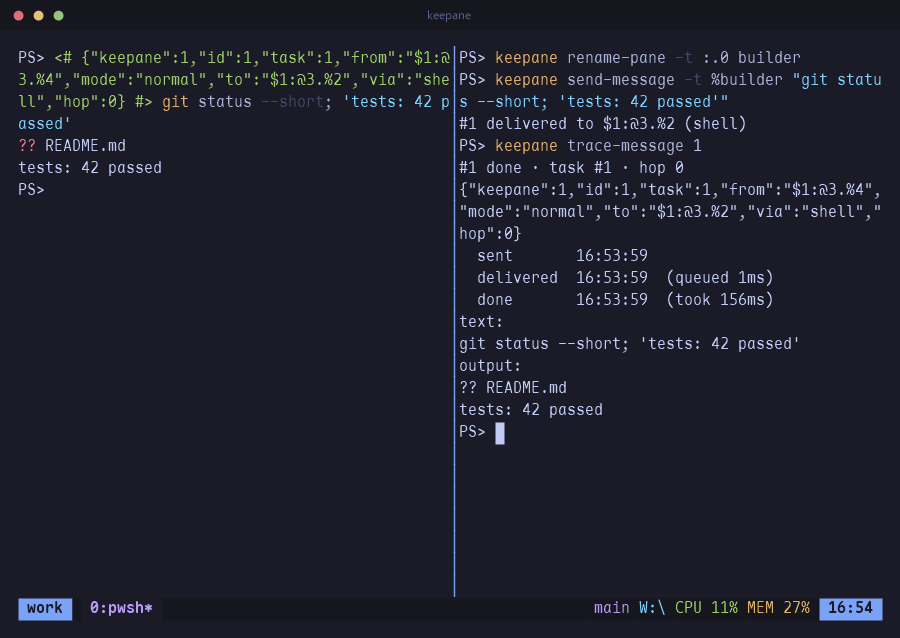
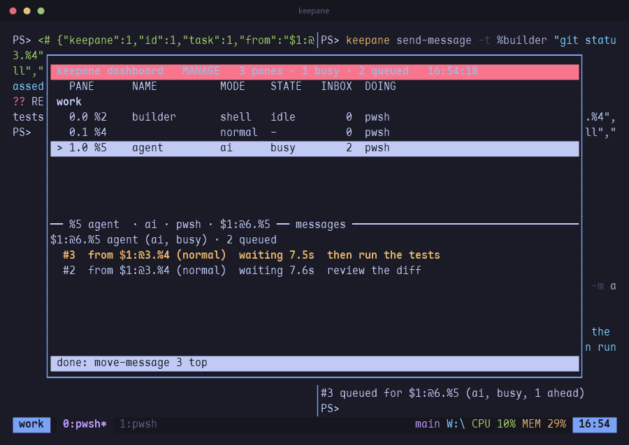

Panes that keep running, and talk to each other.
keepane is a terminal multiplexer. The programs in its panes keep running after the terminal connection closes, and panes can pass messages to each other through inboxes. The usual tmux keys, commands and config file keep working, h j k l included, and PowerShell, cmd and WSL run inside panes with every keystroke intact.
Panes, the way you already know
C-b % splits left and right, C-b " top and bottom. Move with the vim keys or the arrows, and keep pressing: movement and resizing repeat without the prefix.


- Every pane is a ConPTY, so PSReadLine chords, IME input and full-screen programs behave as they do outside keepane.
- The mouse works: click a pane to focus it, drag a border to resize it, drag across text to copy it to the Windows clipboard.
- C-b S or
:set sync(Tab completes the name) sends every key to every pane in the window.split-window -N 3adds three panes at once and tiles them.
Your panes, on your phone
Start keepane web before you walk away from a long build. It prints a QR code; scan it on
the same Wi-Fi and the phone's browser lists every pane, shows any of them as it appears on screen,
and lets you type into it. Nothing to install on the phone.

- keepane sends the screen again whenever it changes, colours included, and you can scroll up through what already went by. The list carries each window's alert marks (# printed, ! bell, ~ silent), so a finished job shows up without opening it.
- A row under the screen has the keys a phone keyboard lacks: Esc, Tab, Shift+Tab, the arrows, Ctrl+C, y, n, 1, 2 and 3. Longer input goes in the text box. The + menu splits the pane, opens a window or closes the pane.
- Commands run on the computer. The phone can read panes, type into them and use that menu, nothing more;
--read-onlyleaves out the typing. - It works only while
keepane webis running, and the QR code carries a new 128-bit key each time. It is plain HTTP, which is fine on a home network; from outside, go through Tailscale or a similar private network.
Full screen, a list, or a menu
C-b z blows the current pane up to the whole window and back. C-b w opens the tree of sessions and windows: j k to move, g G for top and bottom, digits to jump, Enter to go. C-b > puts the pane commands in a menu, so nothing has to be remembered.


- C-b Space cycles through five layouts: even columns, even rows, a main pane beside or above the rest, and a tiled grid. C-b E evens out the panes next to the current one.
- C-b q draws a number on every pane; press the number to jump there.
- Zooming grows the pane itself, each of its corners heading for the window's, and unzooming shrinks it back; when the focus moves to another pane or window, a frame flies there. Programs are resized once, so nothing waits for it;
set -g animation offturns it off. A zoomed window stays zoomed as you move between its panes, until C-b z. - In copy mode, / searches forward and ? backward, n and N repeat the search, and the match is scrolled to the middle of the screen.
display-popupruns a program in a box over the window and closes the box when the program exits. It is handy for a quickgit logwithout touching the layout.
Close the terminal, the programs keep running
C-b d detaches and the programs keep running in the background. keepane attach
picks the session up again, from any terminal window.


- Sessions survive a reboot too. Each one is saved to its own file whenever its layout changes, and
keepane resumebrings back the windows, the pane layout, and each pane's command and directory. - The file also keeps what each pane printed:
save-historystores the last 500 lines by default, or the whole scrollback withall, colours included. A resumed pane shows its old output instead of an empty prompt. keepane list-savedshows what can be restored, andkeepane resume workrestores just that session.
The job that finished while you were elsewhere
monitor-activity marks a window you are not looking at with # when it prints,
! on a bell, and ~ when it has been silent too long. C-b M-n jumps to the
next marked window.

list-windows; a command that fails leaves its pane and its exit code behind.
- With
remain-on-exit, a pane stays open after its program exits and shows[cmd exited with 3], so a crash at 3am is still there in the morning.respawn-panestarts the program again in the same place. pipe-pane "$input | Add-Content build.log"sends everything a pane prints to a command, and tells you if that command falls behind.- Scripts can wait on each other:
keepane wait-for readyblocks until another client runskeepane wait-for -S ready, and-Land-Uwork as a lock.
What ran, when, and how long
C-b C-t writes each command's start time, duration and result at the end of its line. What panes print is kept a day at a time, and C-b / opens any day.



- The time goes in the blank end of the line. The pane keeps its width and nothing is added to what the program printed. On the phone, the ⏱ button puts the times in a column of their own.
- What scrolls off a pane is written to a file for that pane and day, kept for 30 days, with a line of times before each command. In the pager, [ and ] jump from command to command and / searches.
- Closed the wrong pane or window? It is kept for 10 seconds with its program still running, and C-b u puts it back where it was.
Send work between panes
Give a pane a name and a work mode, and send it messages: a shell runs them at its prompt, an agent gets them when it is free. C-b v shows every pane and its inbox.



- Every message says where it came from in one line of JSON. A chain of messages is one task, with how long each step waited and took; one that goes round more than eight times is refused.
- Agents such as Claude Code use it through MCP: send and reply, wait for an answer within their turn, make panes of their own to work in.
keepane setup claudeprints the two hooks and the registration. - A pane's work mode is changed in that pane, so nothing running in one pane turns another into a shell that runs what it is sent. What happens is kept in an event log for 30 days.
Your .tmux.conf, more or less
The same command names on the command line, in the : prompt and in the config file. Options tmux has but keepane does not are accepted and ignored, so an existing config is a starting point.
set -g prefix C-a
set -g default-shell wsl # pwsh (default), powershell, wsl, cmd, or a path
set -g mouse on
set -g repeat-time 500 # how long a `bind -r` key keeps working
set -g monitor-activity on # mark a background window that prints
set -g remain-on-exit on # keep a pane whose program died
bind -r h select-pane -L # -r: press h h h after one prefix
bind | split-window -h
bind -n M-Right next-window # -n: no prefix at all
set -g status-right "#{pane_current_path} %H:%M"- A command name can be cut to any unambiguous prefix (
keepane att,keepane splitw -h), and so can an option name:set syncmeansset synchronize-panes,set mon-act onmeansset monitor-activity on, and an on/off option given no value flips. keepane send-keys(tmux's-Xcopy-mode commands included),keepane capture-pane -p -eandkeepane split-windowdrive a session from a script. Run inside a pane, they need no socket name.- A plugin is a directory with a
<name>.keepanefile of commands plus scripts in any language, loaded withset -g @plugin name. Hooks fire on new windows, splits, pane exits and attaches.
Git branch, CPU and memory on the status line
The default status line shows your git branch, the pane's directory, CPU and memory use, and the battery if there is one. keepane reads these itself once a second without starting any helper process. You can replace the line with your own or turn it off.
[work] 0:editor* 1:build 2:logs master | ~\Documents\dfine\keepane | CPU 9% MEM 65% | 11:45#{git_branch},#{cpu_percentage},#{ram_percentage},#{battery_percentage},#{pane_current_path_short}and#{pane_pid_command}(the program running in the pane right now) can go anywhere instatus-right.set -g status offhides the line.- When two terminals attach at different sizes,
window-sizedecides which one sizes the session. The smaller terminal sees part of the window and pans with Shift + arrows. - A right click pastes. At the : prompt, Tab completes commands, flags, targets and option names, and
keepane completion powershellgives PowerShell the same completions. keepane updateinstalls a new release, andkeepane restart-servermoves every running session to it with history and directories. Attached terminals reconnect on their own.
Install
Installer
The .msi puts keepane in Program Files, on the system PATH, and in "Apps & features".
Get itScoop
The manifest in the repository installs the zip and follows releases.
scoop install https://raw.githubusercontent.com/newdee/keepane/master/packaging/scoop/keepane.jsonFrom source
cargo install --git \
https://github.com/newdee/keepane --locked